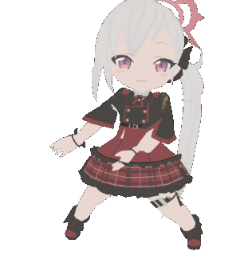
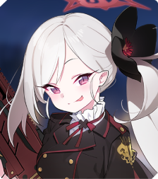

มุสึกิ
(MUTSUKI)
ผู้ควบตำแหน่งหัวหน้าปฏิบัติการ และหัวหน้าหน่วยจู่โจม แห่งหน่วยรับจ้างสารพัด 68
เธอต่างจากอารุที่มีจิตสำนึก และความรู้สึกผิดชอบชั่วดี มุสึกิเป็นปีศาจน้อย ที่ก่อเรื่องไม่ดีได้อย่างไม่ลังเล เธอเป็นเพื่อนกับอารุมานาน
จนรู้นิสัยของอารุดีกว่าใคร แต่ก็ไม่ได้แปลว่าเธอจะยอมให้อารุเสมอไป
ตัวอย่าง live2d